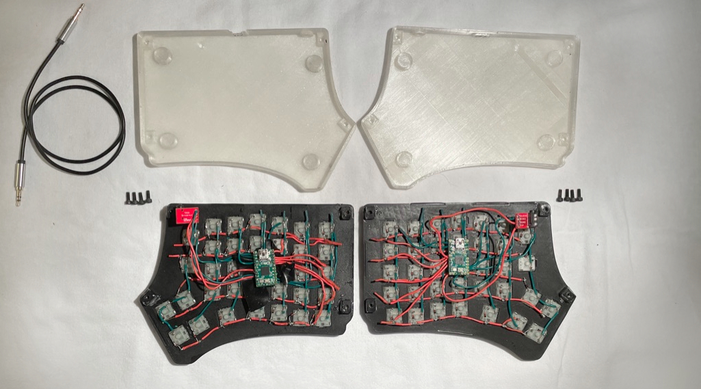
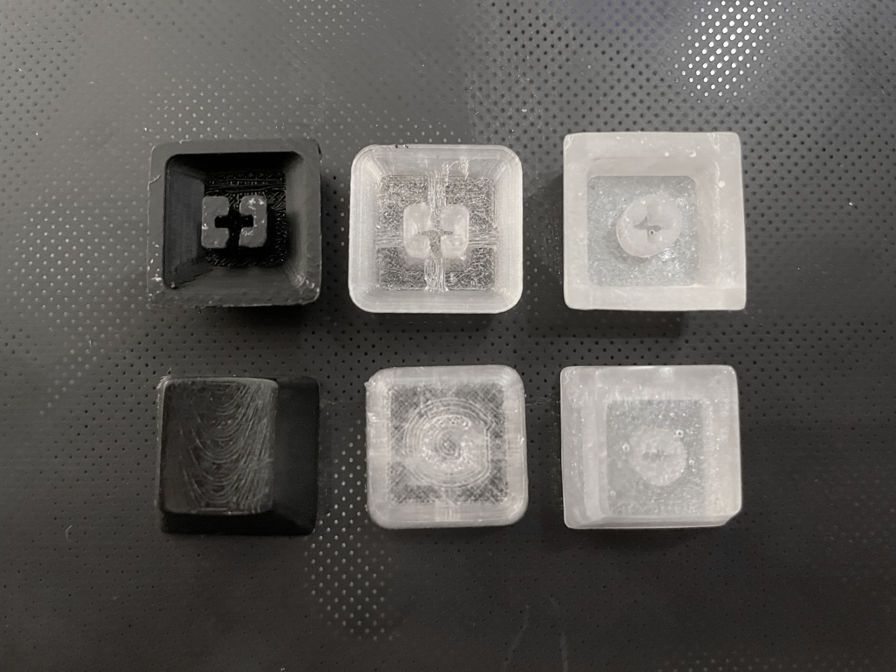

Through this project I have gained practical knowledge of small scale production, rapid prototyping, electronics and programming, and new fabrication processes, as well as experience with Fusion 360, OpenSCAD, Teensy 2.0 documentation and limitations, soldering, and 3D printer parameter tuning for product and material requirements.
Specifically for the keycaps, a lot of effort has gone into rapidly prototyping keycap molds. The original 3D printed keycaps I had made where tedious to finish and aesthetic and tactile underwhelming. I then purchased silicone keycap molds but was not satisfied with the fit on the switch stem, as there was significant slop
